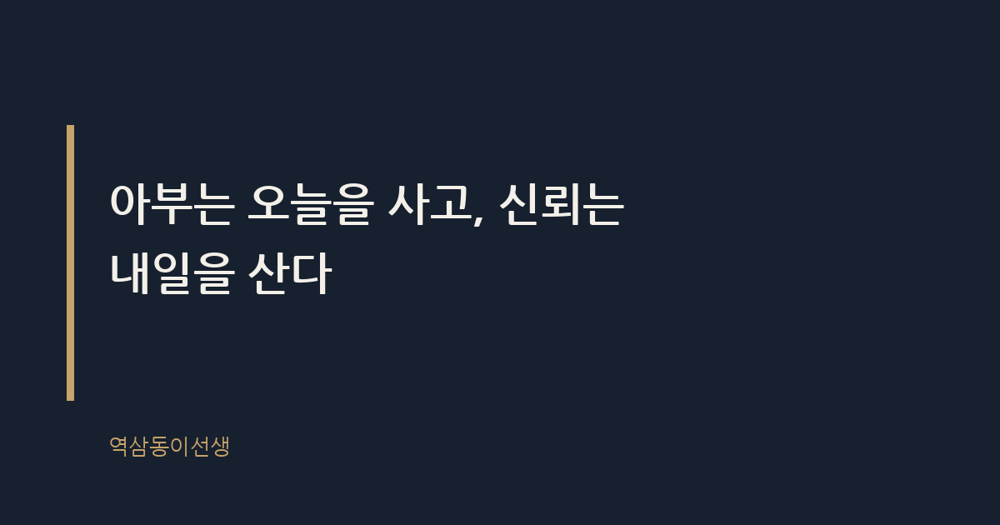
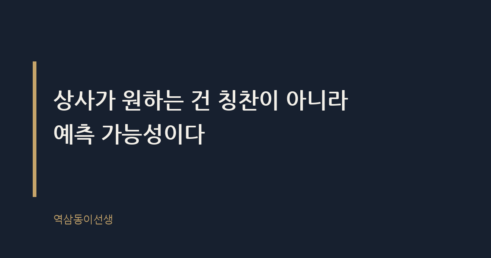

주제 상사와 잘 지내는 법, 아부와 신뢰의 경계 (evergreen / office)
제목 후보
메타 설명 상사와 잘 지내는 법을 묻는 후배에게, 아부와 신뢰를 가르는 기준과 실제 회사에서 통하는 말 한마디를 장면으로 풀어본다.
라벨 상사와잘지내는법, 직장생활, 회사생활팁, 보고의정석, 직장인에세이, 사내정치, 아부와신뢰의차이, 상사신뢰쌓는법, 승진시즌회사생활, 직장인커뮤니케이션, 역삼동이선생
실용 자산 예시 문장 모음 — 상사에게 쓰는 말 한마디를 상황별로 비교해야 검색 의도(아부와 신뢰 구분법)에 바로 답이 되므로 예시 문장 표를 넣음
발행 전 팩트체크
이미지 (Blogger 편집기에 드래그해 넣으세요)
도입부 사진 · ⓒ TaniaRose / Pexels


작년 가을, 승진 인사 발표를 앞두고 한 팀의 과장이 매일 아침 내 방 앞에 커피를 놓고 갔다. 석 달째였다. 처음에는 고마웠고, 두 달째에는 머쓱했고, 석 달째에는 솔직히 피곤했다. 발표 당일, 그 과장은 승진자 명단에 없었다. 대신 승진한 건 커피 한 잔 산 적 없는, 매주 월요일 아침 9시에 지난주 숫자와 이번 주 계획을 세 줄로 정리해 보내던 대리였다.
상사와 잘 지내는 법을 묻는 후배가 많다. 대부분 질문의 본심은 "어떻게 하면 예쁨받을까"다. 그런데 회사에서 오래 지내 보면 예쁨받는 사람과 끝까지 쓰이는 사람이 다르다는 걸 알게 된다. 아부는 그 순간의 호감을 사고, 신뢰는 다음 프로젝트의 지분을 산다. 둘을 헷갈리면 커피를 석 달 날라도 승진 명단에 못 오른다.
아부란 상대의 기분을 맞추기 위해 사실을 과장하거나 왜곡하는 커뮤니케이션이다. 신뢰란 반복된 행동을 통해 상대가 나를 예측할 수 있게 만드는 관계의 자산이다. 정의만 놓고 보면 명확한데, 현장에서는 둘이 뒤섞여서 구분이 안 된다. 칭찬도 하고, 커피도 사고, 보고도 하기 때문이다. 차이는 그 행동이 누구의 불안을 줄여주느냐에 있다.
재미있는 건, 그 과장도 처음부터 아부를 하려던 건 아니었다는 점이다. 승진 시즌이 다가오자 조급해졌고, 뭐라도 눈에 띄고 싶었을 것이다. 그 조급함이 커피로 나타났을 뿐이다. 문제는 조급함이 만든 행동이 상사의 불안을 전혀 건드리지 못했다는 데 있다. 상사는 커피 맛이 궁금한 게 아니라 그 과장이 맡은 프로젝트가 제때 끝날지가 궁금했다.
임원 자리에 앉아 보면 알게 되는 게 있다. 결재란에 이름을 올리는 순간부터 그 결정에 대한 책임은 전부 내 것이 된다. 그래서 임원이 제일 좋아하는 직원은 재미있는 사람도, 싹싹한 사람도 아니고 "저 사람한테 맡기면 사고는 안 난다"는 확신을 주는 사람이다. 아부는 이 확신과 아무 상관이 없다. 오히려 아부가 심한 사람일수록 보고 내용이 아니라 보고 태도를 신경 쓰게 만들어서, 상사의 불안을 더 키운다.
상사가 아부에 쉽게 넘어가는 이유는 조직의 의사결정이 근본적으로 외로운 작업이기 때문이다. 위로 올라갈수록 솔직한 피드백을 주는 사람이 줄어든다. 그 빈자리를 아부가 파고든다. 그런데 이 틈을 메워주는 사람에게 상사가 느끼는 감정은 신뢰가 아니라 안도다. 안도와 신뢰는 비슷해 보여도 전혀 다른 감정이다. 안도는 상황이 끝나면 사라지고, 신뢰는 다음 상황까지 이어진다.
르네상스 시대 메디치 가문이 미켈란젤로를 후원한 이유를 생각해 보면 비슷하다. 그들이 원한 건 아첨이 아니라 시스티나 성당 천장화라는 결과물이었다. 아첨꾼은 널렸지만 결과를 만드는 사람은 드물었기에, 메디치는 성격이 까다로워도 미켈란젤로를 끝까지 곁에 두었다. 회사도 다르지 않다. 상사 곁에 오래 남는 사람은 기분을 맞춰주는 사람이 아니라 결과를 만들어주는 사람이다.
같은 회의실에서도 아부와 신뢰는 전혀 다른 모습으로 나타난다. 상사가 새로운 전략을 발표하면, 아부하는 사람은 즉시 손뼉을 치듯 반응한다. "역시 다르십니다", "이번에도 적중하실 것 같습니다" 같은 말이 먼저 나온다. 신뢰를 쌓는 사람은 반응이 한 박자 늦다. 대신 회의가 끝난 뒤 메일로 숫자를 붙여서 질문을 보낸다. "말씀하신 방향으로 가면 3분기 매출 목표 대비 이 정도 갭이 생기는데, 어떻게 메울지 같이 고민해보면 좋겠습니다."
상사 입장에서 당장 기분이 좋은 쪽은 전자다. 그런데 그 다음 분기, 실제로 전략을 수정하거나 위기를 넘길 때 다시 찾게 되는 쪽은 후자다. 회의실에서의 리액션 속도와 신뢰의 두께는 반비례하는 경우가 많다. 반응이 빠른 사람일수록 생각하지 않고 말한 경우가 많고, 반응이 느린 사람일수록 숫자를 확인하고 말한 경우가 많기 때문이다.
같은 상황에서도 어떤 말을 고르느냐에 따라 아부로 들리기도 하고 신뢰로 쌓이기도 한다. 자주 마주치는 상황 네 가지를 표로 정리했다. 그대로 외워서 쓰기보다, 어떤 기준으로 말을 고르는지를 눈여겨보면 된다.
| 상황 | 아부에 가까운 말 | 신뢰를 쌓는 말 |
|---|---|---|
| 상사의 아이디어가 애매할 때 | "역시 팀장님 생각은 다르십니다" | "그 방향 좋습니다. 다만 B안도 비교해서 다음 주에 같이 보여드리겠습니다" |
| 실수를 발견했을 때 | (말 안 하고 넘어간다) | "이 숫자 확인했는데 오차가 있어서 미리 말씀드립니다" |
| 회식 자리에서 | "팀장님 요즘 왜 이렇게 동안이세요" | (별말 없이 상사가 신경 쓰는 프로젝트 근황을 묻는다) |
| 주간 보고를 할 때 | "다 잘 되고 있습니다" | "80%는 계획대로, 20%는 지연 사유와 대안까지 정리했습니다" |
표를 보면 패턴이 보인다. 아부는 상사의 '기분'에 반응하고, 신뢰는 상사의 '불확실성'에 반응한다. 상사가 궁금한 건 자기 아이디어가 멋있는지가 아니라 일이 제대로 굴러가는지다. 그 질문에 먼저 답을 주는 사람이 결국 신뢰를 쌓는다.
더 골치 아픈 쪽은 본인이 아부하고 있다는 걸 모르는 사람들이다. 매번 상사의 말에 "맞습니다, 맞습니다"를 반사적으로 붙이는 습관, 상사가 던진 질문에 곧바로 긍정적인 답부터 내놓는 습관이 그렇다. 본인은 그게 센스 있는 태도라고 생각하지만, 상사 입장에서는 이 사람이 내 의견에 동의하는 건지 반사적으로 동의하는 척하는 건지 구분이 안 간다. 시간이 지나면 그 사람의 "좋습니다"는 신호로서의 가치를 잃는다.
한 번은 신입 사원이 회의 때마다 상사의 모든 발언에 고개를 크게 끄덕이는 걸 본 적이 있다. 몇 달 뒤 그 상사가 사석에서 이런 말을 했다. "쟤는 내가 틀린 말을 해도 끄덕이는 것 같아서 오히려 불안하다." 과한 동의는 동의가 아니라 소음이 된다. 상사가 원하는 건 무조건적인 긍정이 아니라, 틀렸을 때 틀렸다고 말해줄 사람이라는 확신이다.
승진한 대리가 특별한 사건을 만든 적은 없었다. 매주 월요일 아침 9시, 지난주 숫자와 이번 주 계획 세 줄. 그 말고는 없었다. 그런데 그 세 줄이 1년 쌓이니까 임원 입장에서는 "이 사람은 내가 물어보기 전에 먼저 알려준다"는 데이터가 되었다. 신뢰는 거창한 충성 맹세가 아니라 이런 사소한 반복에서 만들어진다.
반대로 커피를 나르던 과장은 한 번도 숫자로 신뢰를 준 적이 없었다. 상사 입장에서는 친절한 사람이긴 한데, 저 사람에게 중요한 일을 맡겼을 때 어떤 결과가 나올지 예측이 안 됐다. 예측이 안 되면 승진 심사 테이블에서 그 이름은 자연스럽게 뒤로 밀린다. 아부가 통하지 않는 이유는 단순하다. 조직은 결국 누가 사고 없이 일을 끝내는지를 묻는 구조이기 때문이다.
물론 현실에서는 아부가 먹히는 순간도 있다. 자리가 불안한 상사, 인정 욕구가 유독 큰 상사 앞에서는 한동안 칭찬이 효과를 낸다. 문제는 그 효과의 유통기한이 짧다는 데 있다. 그 상사가 자리를 옮기거나 더 큰 위기를 만나는 순간, 아부로 쌓은 관계는 아무 힘이 없다. 위기 때 찾는 사람은 늘 숫자와 대안을 가진 사람이지, 분위기를 맞춰주던 사람이 아니다.
실제로 조직 개편 때마다 보는 장면이 있다. 상사와 유독 가깝게 지내던 사람이 그 상사가 다른 부서로 가는 순간 함께 흔들리는 경우다. 그 사람의 입지가 상사 개인에게 묶여 있었기 때문이다. 반대로 숫자와 결과로 신뢰를 쌓은 사람은 상사가 바뀌어도 자리가 크게 흔들리지 않는다. 새로 온 상사도 전임자의 평가와 데이터를 참고하기 마련이고, 거기 남은 건 누가 예뻐했는지가 아니라 누가 일을 해냈는지이기 때문이다.
후배들에게 늘 하는 말이 있다. 상사 비위를 맞추는 데 쓰는 에너지의 절반만 보고서 숫자를 한 번 더 확인하는 데 써 보라고. 효과는 더디게 나타나지만 훨씬 오래간다.
아부는 오늘을 사고, 신뢰는 내일을 산다. 씁쓸하면서도 꽤 명확한 사실이다. 상사와 잘 지내고 싶다면 상사의 기분이 아니라 상사의 불안을 먼저 살펴야 한다. 그 불안을 줄여주는 사람이 결국 오래 쓰이고, 다음 기회를 받는다. 커피는 그냥 커피로 두고, 월요일 아침 세 줄 보고를 먼저 써보길 권한다.
Q. 커피를 나르던 쪽이었나요, 월요일 아침 보고를 쓰던 쪽이었나요?